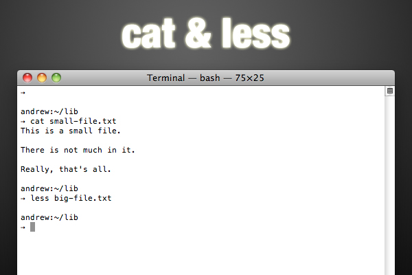

Terminal commands that will boost your productivity
Back in May, Nettuts+ ran a great article titled “7 Simple and Useful Command-Line Tips”; this was a great article for getting started with using the command line. But there’s a lot more you can learn about using a shell, and I’ll take you to the next level in this tutorial!
#Getting Started
If you’re running Mac OS X, or your favourite flavour Linux, you’re all set. Just fire up the terminal, and keep going. If you’re on Windows, well, the default command set isn’t quite what a bash shell is. If you want some power, check out Microsoft PowerShell; however, the commands below won’t necessarily work there. You can get a bash shell on Windows, though:
Install Cygwim, a Linux-like environment for Windows.
Install msysgit; depending on the options you choose when installing, you’ll get a Git Bash that should work will all these commands.
Try Windows’ subsystem for Unix-based applications. Although I haven’t tried it myself, I understand you can get a Unix shell with it.
All right, let’s hop in!
###1. Touch
As a developer, one of your most common tasks is creating files. If you’re working from the command line, most of the time you’ll just pass the name of the file you want to create to your editor:
1 | $ mate index.html $ vim default.css |
However, occasionally you’ll just want to create one or more files, without editing it. In this case, you’ll use the touch command:
1 | $ touch index.html $ touch one.txt two.txt three.txt |
It’s that easy. Actually, the touch command is for updating the access / modified date of a file; it’s just a nice side-effect that if the file doesn’t exist, it will create it.
###2. Cat and Less

Well, since it’s all about files, there’s a good change you’ll want to see the contents of a file from the terminal sooner or later. There’s a few commands that will do this for you. First is cat; cat is short for “concatenate”, and this command does more than output file contents; however, that’s what we’ll look at here. It’s as simple as passing the command a file:
1 | $ cat shoppingList.txt |
However, if the file is large, the contents will all scroll past you and you’ll be left at the bottom. Granted, you can scroll back up, but that’s lame. How about using less?
1 | $ less shoppingList.txt |
Less is a much better way to inspect large files on the command line. You’ll get a screen-full of text at a time, but no more. You can move a line up or a line down with the k and j respectively, and move a window up or down with b and f. You can search for a pattern by typing /pattern. When you’re done, hit q to exit the less viewer.
###3. Curl
Since you probably work with your fair share of frameworks libraries, you’ll often find yourself downloading these files as you work. Oh, I know: you can just download it from the web, navigate to the folder, uncompress it, and copy the pieces to your project, but doesn’t that sound like so much work? It’s much simpler to use the command line. To download files, you can use curl; proceed as follows:
1 | $ curl -O http://www.domain.com/path/to/download.tar.gz |
The -O flag tells curl to write the downloaded content to a file with the same name as the remote file. If you don’t supply this parameter, curl will probably just display the file in the commmand line (assuming it’s text).
Curl is a pretty extensive tool, so check out the man page (see below) if you think you’ll be using it a lot. Here’s a neat tip that uses the shell’s bracket expansion:
1 | $ curl -0 http://www.domain.com/{one,two,three}.txt |
Yeah, it’s that easy to download multiple files from one place at once. (Note that this isn’t curl functionality; it’s part of the shell, so you can use this notation in other commands; check this link out for more)
###4. Tar and Gzip
So, now you’re rocking command line downloads; however, there’s a really good chance that most of the things you download will be archived and gzipped, having an extension of .tar.gz (or, alternately, .tgz). So, what do you do with that? Let’s take a step back for a second and understand what exactly “archived and gzipped” means. You’re probably familiar with archives. You’ve seen .zip files; they’re one incarnation of archives. Basically, an archive is just a single file that wraps more than one file together. Often archives compress the files, so that the final file is smaller than the original ones together. However, you can still get a bit smaller by compressing the archive … and that’s where gzipping comes in. Gzipping is a form of compression.
So, back to that download. It’s been tarred (archived) and gzipped. You could unzip it and then un-tar it, but we’re all about fewer keystrokes here, right? Here’s what you’d do:
1 | $ tar xvzf download.tar.gz |
Wait, what? Here’s the breakdown: tar is the command we’re running; xvzf are the flags we’re using (usually, you’d have a dash in front, but that’s optional here). The flags are as follows:
1 | -`x` let’s `tar` know we’re extracting, not archiving. -`v` let’s `tar` know we want it to be verbose (give us some output about the action it’s performing). -`z` let’s `tar` know that the file we’re working with has been gzipped (so it unzips the file). -`f` let’s `tar` know we’re going to pass it the name of the archive file. |
If you want to create one of these gzipped archives, it’s as simple as replacing the x flag with a c (to create an archive). The v and z flags are options: do you want output? how about gzipping? Of course, leave f; you’ll have to give the file name for the new archive (otherwise, it will all be output to the command line). After that, you’ll pass the command all the files you want to put in the archive:
1 | $ tar cvzf archive.tar.gz index.html css js auth.php $ tar cvzf archive.tar.gx *.txt |
Just for completeness, I’ll mention that you can gzip archives (or other files) individually; when you do so, gzip replaces the original file with the gzipped version. To un-gzip, add the -d flag (think decompress.
1 | $ gzip something.txt $ gzip -d something.txt.gz |
###5. Chmod
Another thing you’ll do often as a web developer is change file permissions. There are three permissions you can set, and there are three classes that can receive those permissions. The permissions are read,write, and execute; the classes are user, group, and others. The user usually the owner of the file, the user that created the file. It’s possible to have groups of users, and the group class determines the permissions for the users in the group that can access the file. Predictably, the others class includes everyone else. Only the user (owner of the file) and the super user can change file permissions. Oh, and everything you’ve just read goes for directories as well.
So, how can we set these permissions? The command here chmod (changemode). There are two ways to do it. First, you can do it with octal notation; this is a bit cryptic, but once you figure it out, it’s faster. Basically, execute gets 1 ‘point’, write gets 2, and read gets 4. You can add these up to give multiple permissions: read+write = 6, read+write+execute = 7, etc. So for each class, you’ll get this number, and line them up to get a three digit number for User, Group, and Others. For example, 764 will give user all permissions, give group read and write ability, and give others permission to read. For a better explanation, check out the Wikipedia article.
If you have a hard time remembering the octal notation, you might find symbolic notation easier (although it takes a few more keystrokes). In this case, you’ll use the initial ‘u’, ‘g’, and ‘o’ for user, group, and others respectively (and ‘a’ for all classes). Then, you’ll use ‘r’, ‘w’, and ‘x’ for read, write, and execute. Finally, you’ll use the operators ‘+’, ‘-‘, and ‘=’ to add, subtract, and absolutely set permissions. Here’s how you’ll use these symbols: class, operator, permissions. For example, u+rwx adds all permissions to the user class; go-x removes executable permission from group and others; a=rw sets all classes to read and write only.
To use all this theory on the command line, you’ll start with the command (chmod), followed by the permissions, followed by the files or directories:
1 | $ chmod 760 someScript.sh $ chmod u=rwx g+r o-x dataFolder |
###6. Diff and Patch
If you’ve used version control like Git or Subversion, you know how helpful such a system is when you want to share a project with other developers, or just keep track of versions. But what if you want to send a friend some updates to a single file? Or what if another developer has emailed you the new version of a file that you’ve edited since you received the last copy? Sometimes, full-blown version control is too much, but you still need something small. Well, the command line has you covered. You’ll want to use the diff command. Before you make changes to a file, copy the file so you have the original. After you update, run diff; if you don’t send the output to a file, it will just be output to the command line, so include a ]] > with the name for your patch file:
1 | $ cp originalFile newFile $ vim newFile #edit newFile $ diff originalFile newFile 1c1 < This is a sentence. --- > This is a short sentence. $ diff originalFile newFile > changes.patch |
As you can see, the diff is just a simple text file that uses a syntax thediff and patch command will understand. Patch? Well, that’s the command that goes hand in hand with diff. If you’ve received a patch file, you’ll update the original as follows:
1 | patch originalFile2 changes.patch |
And now you’re all updated.
###7. Sudo
Sudo isn’t really a command like the others, but it’s one you’ll find a need for as you venture deeper into the command line world. Here’s the scenario: there are some things that regular users just shouldn’t be able to do on the command line; it’s not hard to do irrevocable damage. The only user who has the right to do anything he or she wants is the super user, or root user. However, it’s not really safe to be logged in as the super user, because of all that power. Instead, you can use the sudo (super user do) command to give you root permissions for a single command. You’ll be asked for you user account password, and when you’re provided that, the system will execute the command.
For example, installing a ruby gem requires super user permissions:
1 | $ gem install heroku ERROR: While executing gem ... (Errno::EACCES) Permission denied - /Users/andrew/.gem/ruby/1.9.1/cache/heroku-1.9.13.gem $ sudo gem install heroku Password: Successfully installed heroku-1.9.13 |
###8. Man
Most of the commands you’ll use in a bash shell are pretty flexible, and have a lot of hidden talents. If you suspect a command might do what you want, or you just want to see some general instruction on using a command, it’s time to hit the manuals, or man pages, as they’re called. Just typeman followed by the command you’re curious about.
1 | $ man ln |
You’ll notice that the man pages are opened in less.
###9. Shutdown
When you’re done for the day, you can even turn your computer off from the command line. The command in the spotlight is shutdown, and you’ll need to use sudo to execute it. You’ll have to give the command a flag or two; the most common ones are -h to halt the system (shut it down), -r to reboot, and -s to put it to sleep. Next, you’ll pass the time it should happen, either as now, +numberOfminutes, or yymmddhhmm. Finally, you can pass a message to be shown to users when the deed is about to be done. If I wanted to put my computer to sleep in half-an-hour, I’d run this:
1 | $ sudo shutdown -s +30 |
###10. History, !!, and !$
Since the command line is all about efficiency, it’s supposed to be easy to repeat commands. There are a few ways to do this. First, you can use the history command to get a numbered list of many of your recent commands. Then, to execute one of them, just type an exclamation mark and the history number.
1 | $ history ... 563 chmod 777 one.txt 564 ls -l 565 ls 566 cat one.txt ... $ !565 |
Granted, this is a terrible example, because I’m typing more characters to use the history than it would take to re-type the command. But once you’re combining commands to create long strings, this will be faster.
It’s even quicker to access the last command and last argument you used. For the latest command, use !!; the usual use case given for this is adding sudo to the front of a command. For the latest argument, use !$; with this, moving into a new folder is probably the common example. In both these cases, the shell will print out the full command so you can see what you’re really executing.
1 | $ gem install datamapper ERROR: While executing gem ... (Errno::EACCES) Permission denied - /Users/andrew/.gem/ruby/1.9.1/cache/datamapper-1.0.0.gem $ sudo !! sudo gem install datamapper Password: Successfully installed datamapper-1.0.0 $ mkdir lib $ cd !$ cd lib |
###Conclusion
If you’re as passionate about productivity as I am, the idea of using the command line as much as possible should resonate with you. What I’ve shown you here is just a sampling of the built in commands … then, there are many more than you can install yourself (look at something like the homebrew package manager, for example). But maybe you’re already proficient on the command line; if so, can you share another great command with the rest of us? Hit the comments!